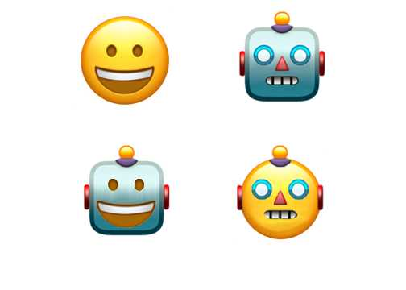

Embodiment type: conclusions
Nonhuman embodiments of objects and animals' success or failure is based on their social roles, functionality, and use of anthropomorphism: the design will have to work twice as hard at replicating social interactions in other ways in order to overcome the social and cultural signifiers at work in making users comfortable with conversing with a typically non-sentient object. Robotic embodiments carry many of the benefits of human embodiments, in that users are comfortable treating them as human-like social entitles, while somewhat avoiding race and class. Choosing a bot body also provides visual transparency about the nature of the human-computer interaction.
